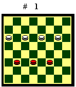
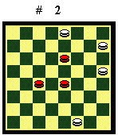
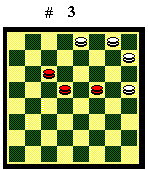

QUATTRO DAME CONTRO TRE DAME
Il finale di quattro dame contro tre dame è vinto dal Bianco, con l'eccezione di alcune posizioni particolari, di cui do un esempio più sotto. Se le dame nere sono separate la vittoria del Bianco è semplice: blocca la dama nera isolata e la forza al cambio. Se le dame nere sono unite invece la condotta di gioco è complessa. Il Bianco con una manovra elaborata deve spingere indietro le dame nere fino a "schiacciarle" a lato e forzare un cambio, facendo attenzione a non cadere in tiri nascosti, che abbondano in questo finale.

Diagramma 1. Il Bianco muove: 1.12-16 23-27 2.10-14 27-23 3.11-15 23-27 4.14-19 22-26 5.9-13 27-22 6.16-20 21-17 (se 21-18, 15-11 doppio baratto) (A) 7.13-10 17-21 8.10-14 21-25 9.20-24 22-27 10.15-20 27-31 (se 27-30, 20-23 poi cambio forzato) 11.20-23 25-29 12.24-20 29-25 13.14-18 25-29 14.19-14 29-25 15.18-13 25-21 16.13-17 21-25 17.14-18 26-30 18.17-21 25-29 19.21-25 30-26 20.18-13 26-30 (se 26-22, 25-21, 29-25*, 21-18, 22-26, 23-27 cambio) 21.13-17 30-26 (se 29-26, 25-29, 26-22, 17-21, 31-27, 20-16 cambio) 22.23-27 31x22 23.25-21 26-30 24.21-26 il Bianco vince.(A) - 6.22-27 7.20-24 27-30 (se 27-31, 15-20, poi 20-23 e stessa linea del tronco) 8.15-11 26-29 9.11-14 21-25 (se 21-26, 13-18, 29-25, 18-22, 26-21, 22-27 cambio) 10.24-28 30-26 11.28-23 cambio forzato. Il Bianco vince.
Il Nero muove: 1.22-19 (se 23-19,
11-14, 19-23, 10-13, 22-26, 14-19 poi occhiali. Se 21-18, 10-14, 18-21,
12-7 cambio forzato) 2.12-16 19-22 3.10-14 23-27 4.11-15 27-23 5.9-13 23-27
6.14-19 22-26 7.16-20 27-22 8.13-10 21-25 9.10-14 25-29 10.20-24 22-27
11.15-20 27-31 (se 27-30, 20-23 cambio forzato) 12.20-23 29-25 13.14-18
25-29 14.19-14 29-25 15.18-13 25-21 16.13-17 21-25 17.14-18 26-30 18.17-21
25-29 19.21-25 30-26 20.18-13 26-30 21.13-17 30-26 22.23-27 31x22 23.25-21
26-30 24.21-26 il Bianco vince.
Posizioni di pari

Riporto due esempi in cui il Bianco non riesce a liberare le proprie dame legate a sponda:Diagramma 2. Il Nero muove: 1.19-23 2.8-4 18-14 3.3-7 11-15 4.4-8 15-11 5.8-4 11-6 6.7-3 6-11 7.16-12 14-19 8.12-7 19-14 ecc. Pari.

Diagramma 3. Il Nero muove:
1.14-11 2.16-12 15-19 3.12-7 11-15 4.7-12 15-11 5.3-7 11-15 6.12-16 19-14
7.7-12 14-19 8.4-7 10-14 ecc. Pari.